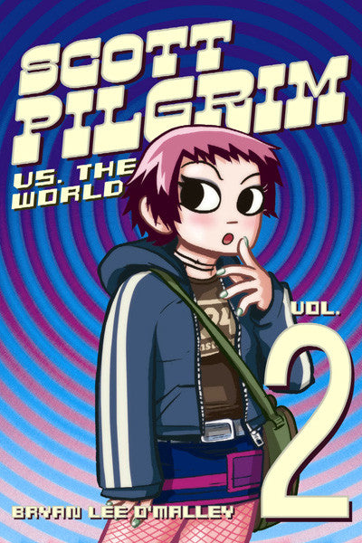

Scott Pilgrim vs. The World opens with a flashback to Scott Pilgrim as a transfer student to St. Joel's Catholic High School in Northern Ontario, seven years before the series began. As soon as Scott arrives on campus, he is faced with three hoodlums, whom he fights and ultimately loses to. Outside the principal's office, Scott meets a girl named Lisa Miller who immediately befriends him. Scott and Lisa attempt to start a band (Sonic & Knuckles), only to realize that they are missing a drummer.
Meanwhile, Scott meets Kimberly Pine in his geography class (he draws a sheep for her) and grows increasingly fond of her, only to find out later at a school performance that she plays the drums. Lisa and Scott scheme to ask Kim to join the band, but when Scott shows up to school the following Monday, he finds out she has been kidnapped by students from the rival Benvie Tech High School. Another game-esque battle ensues and Scott defeats all the evil Benvie Tech Boys, including the final boss, Simon Lee, and rescues Kim. The two start dating and Kim joins Sonic & Knuckles until Scott moves to Toronto. Ramona Flowers then steps into Scott's dream/flashback to wake him up.
Scott and Wallace ride the bus together, and Wallace tells him that ex-skateboarder/actor Lucas Lee, Ramona's second evil ex-boyfriend, is filming a new movie in Toronto. Wallace also issues Scott one of his "famous ultimatums," telling him he must break up with Knives, threatening to tell Ramona about her if he doesn't. Scott goes to meet Knives and awkwardly breaks it off right after she tells him she loves him, but is cheered by thoughts of Ramona.
Elsewhere, Kim wakes up after having a dream in which Simon Lee killed Scott. After waking up, Kim gets dressed and heads to No-Account Video, where she shares a small exchange with colleague Hollie Hawkes and later Scott shows up at the video store to rent several of Lucas Lee's films to prepare for his next battle. Meanwhile, Ramona vists the Second Cup where Stacey Pilgrim works and the two exchanges pleasantries, giving Scott, who is at his apartment, an "ominous feeling".
Later Knives, still shaken up by the breakup, goes to Scott's apartment to see if he's there and Wallace tells her to leave. The following day Scott and Ramona go on another date and end up watching one of Lucas Lee's movies. Whilst watching the movie, Ramona once again suffers from The Glow but it quickly subsides and the two embrace a kiss before going to sleep.
Scott is woken up in the early hours by a phonecall from his parents who are currently touring Europe and Scott reveals he has a girlfirend to them. Later Scott and Ramona go to Stephen Stills' house with their friends and make a vegan shepherd's pie, the recipe dictated step-by-step by Stephen Stills. Unbeknowst to the group, Knives is watching them from the kitchen window and, after seeing Scott with Ramona, freaks out. Knives then calls her friend Tamara Chen, and gives herself a total makeover, including dying part of her fringe red in an effort to get Scott's attention. She then decides to take out Ramona in order to win Scott back.
Meanwhile, Scott and Ramona are hanging out at Ramona's Apartment where it is revealed she owns a pet cat called Gideon. Ramona then briefly talks about her and Lucas' relationship.
The next day, Scott goes to meet Lucas at his filming location, the Casa Loma. Lucas immediately beats Scott up, after which they take a lunch break and Lucas tells Scott about how Ramona broke his heart, and how there is a League of Ramona's Evil Ex-Boyfriends who have organized themselves to come after Scott. Initially, Lucas offers to let Scott go if the latter would give him all his money, which Scott refuses to, calling him a "sell-out". Scott then challenges Lucas Lee to a skateboard competition; Lucas at first claims that riding down the rails at the castle is "impossible", but would rather take on the challenge than lose face. He starts out well, but reaches 309 kph which is "too fast to live" and bursts into Coins. Scott gets an item (a Mithril Skateboard), but can't use it because he didn't take "skateboard proficiency" back in Grade 5.
Scott walks into the Second Cup where his sister works only to be shocked and surprised that Julie Powers is working a shift there. Julie then reveals that Stacey is with Ramona at the reference library to which Scott is surprised to find that Ramona and Stacey are friends. Julie then mentions that his ex-girlfriend is back in town, however Scott runs straight out of the store shouting as soon as she is mentioned.
Meanwhile, Knives shows up at the reference library and attacks Ramona with her knives, Ramona, however counters the attack with an improvised staff made from a piece of modern art. Knives then recognizes Ramona from the library and believes Scott had been unfaithful to her since before that moment. The two continue to battle with Ramona appearing to have the upper hand, and Knives eventually flees from the battle after repeatedly insulting Ramona.
After the fight, Scott gets a call from Envy Adams, who asks him to open for her band, The Clash at Demonhead, that weekend. The conversation implies that they once had a relationship, and after the phone call, Wallace arrives at the apartment to find Scott in a near-coma-like state.
Scott reveals after band practice that Envy wants them to open for her band at a gig at Lee's Palace. Whilst Stephen Stills is enthusiastic about the offer, Scott is less so and Kim comments enviously about Envy.
Scott and his friends show up to see Envy's band on Friday. Whilst on their way there, Scott talks to Ramona about his relationship with Envy and his job at The Gilded Palace of Flying Burritos. When the two arrive at Lee's Palace, it is revealed that Knives is now dating Young Neil, Stephen Stills' roommate, much of which was to Stills' horror. The book ends with an epic opening by The Clash at Demonhead, and introduces Ramona's third evil ex-boyfriend, Todd Ingram, who is the bassist.